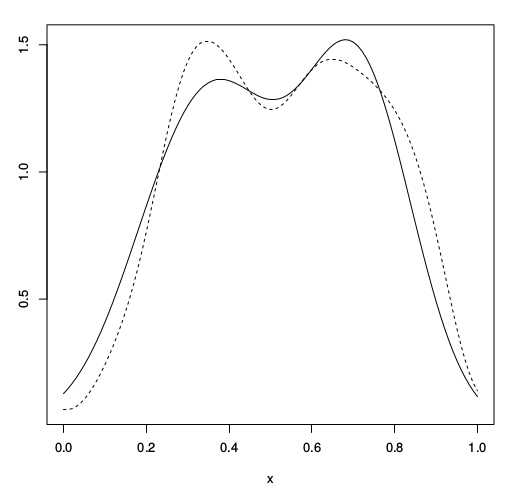
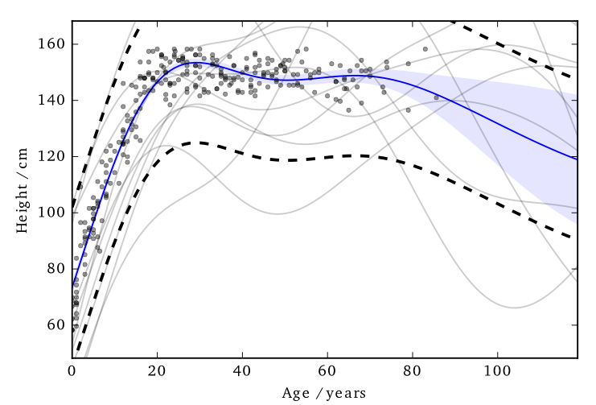

We have a dataset in which the inputs, \(\inputMatrix\), are public. The outputs, \(\dataVector\), we want to keep private.
Data consists of the heights and weights of 287 women from a census of the !Kung
Vectors and Functions
Hall et al. (2013) showed that one can ensure that a version of \(\mappingFunction\), function \(\tilde{f}\) is \((\varepsilon, \delta)\)-differentially private by adding a scaled sample from a GP prior.

3 pages of maths ahead!
Applied to Gaussian Processes
We applied this method to the GP posterior.
The covariance of the posterior only depends on the inputs, \(\inputMatrix\). So we can compute this without applying DP.
The mean function, \(\mappingFunction_D(\inputVector_*)\), does depend on \(\dataVector\). \[\mappingFunction_D(\inputVector_*) = \kernelVector(x_*, \inputMatrix)
\kernelMatrix^{-1} \dataVector\]
where \(\boldsymbol{\alpha} - \boldsymbol{\alpha}^\prime = \kernelMatrix^{-1} \left(\dataVector - \dataVector^\prime \right)\)
We constrain the kernel: \(-1\leq \kernelScalar(\cdot,\cdot) \leq 1\) and we only allow one element of \(\dataVector\) and \(\dataVector^\prime\) to differ (by at most \(d\)).
So only one column of \(\kernelMatrix^{-1}\) will be involved in the change of mean (which we are summing over).
The distance above can then be shown to be no greater than \(d\;||\kernelMatrix^{-1}||_\infty\)
Applied to Gaussian Processes
This ‘works’ in that it allows DP predictions…but to avoid too much noise, the value of \(\varepsilon\) is too large (here it is 100)

EQ kernel, \(\lengthScale = 25\) years, \(\Delta=100\)cm
Inducing Inputs
Using sparse methods (i.e. inducing inputs) can help reduce the sensitivity a little. We’ll see more on this later.
Cloaking
So far we’ve made the whole posterior mean function private…
…what if we just concentrate on making particular predictions private?
Effect of perturbation
Standard approach: sample the noise is from the GP’s prior.
Not necessarily the most ‘efficient’ covariance to use.
Cloaking
Left: Function change. Right: test point change
Cloaking
Left: Function change. Right: test point change
Cloaking
Left: Function change. Right: test point change
Cloaking
Left: Function change. Right: test point change
Cloaking
Left: Function change. Right: test point change
Cloaking
Left: Function change. Right: test point change
DP Vectors
Hall et al. (2013) also presented a bound on vectors.
Find a bound (\(\Delta\)) on the scale of the output change, in term of its Mahalanobis distance (wrt the added noise covariance).
Intuitively we want to construct \(\mathbf{M}\) so that it has greatest covariance in those directions most affected by changes in training points, so that it will be most able to mask those changes.
The go-to book on differential privacy, by Dwork and Roth; Dwork, Cynthia, and Aaron Roth. “The algorithmic foundations of differential privacy.” Theoretical Computer Science 9.3-4 (2013): 211-407. link
Original basis of applying DP to GPs; Hall, Rob, Alessandro Rinaldo, and Larry Wasserman. “Differential privacy for functions and functional data.” The Journal of Machine Learning Research 14.1 (2013): 703-727. link
Articles about the Massachusetts privacy debate Barth-Jones, Daniel C. “The ‘re-identification’ of Governor William Weld’s medical information: a critical re-examination of health data identification risks and privacy protections, then and now.” Then and Now (June 4, 2012) (2012). link
Ohm, Paul. “Broken promises of privacy: Responding to the surprising failure of anonymization.” UCLA Law Review 57 (2010): 1701. link
Narayanan, Arvind, and Edward W. Felten. “No silver bullet: De-identification still doesn’t work.” White Paper (2014). link


{kind=link}
{kind=link}
{kind=link}